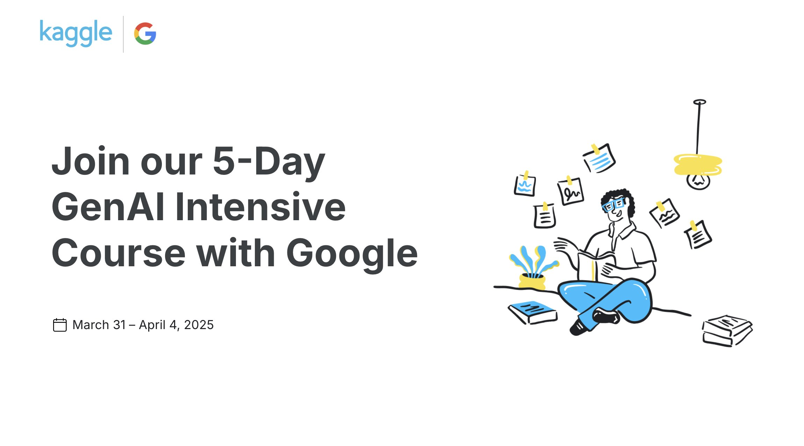

Feel Free To Explore My Projects!

Ghost Coder
Deployed a Qwen 2.5 LLM locally as a coding assistant, integrated via a custom web extension (HTML/CSS/JS). Enabled low-latency code generation and debugging with offline privacy for developer workflows.
Used Technologies:
HTML, CSS, JavaScript, Unsloth, Python

Ghost Reader
Developed a full-stack sentiment analysis tool that dynamically plays music matching the emotional tone of novels, using NLP models fine-tuned on literary datasets. Achieved 96% accuracy within 1,000 training steps as part of Google's Kaggle Gen AI Intensive capstone.
Used Technologies:
Transformers, Longformer, Unsloth, Python

Ocean Heatmap Visualization
Developed in a Kodluyoruz Ideathon project using synthetic RGB heatmaps (R: wind, G: waves, B: depth) to train a CNN for offshore wind site classification. Achieved scalable, threshold-adjustable analysis without manual data processing.
Used Technologies:
pytorch, CNN, Python

Ghost Agent (AI Customer Service Agent)
Developing a RAG-powered assistant (Gemini API + Node.js/JS) that analyzes user sentiment and wait time to automatically escalate frustrated customers to human agents. Combines real-time emotional tone detection with queue optimization.
Used Technologies:
Gemini API, Node.js, JavaScript, HTML, CSS